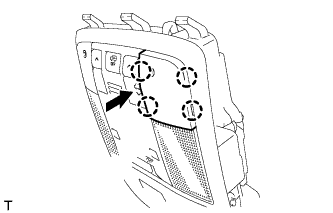

ДАТЧИК ПРОНИКНОВЕНИЯ > УСТАНОВКА |
| 1. УСТАНОВИТЕ ДАТЧИК РАДАРА ПРОТИВОУГОННОЙ СИСТЕМЫ |
Установите датчик радара противоугонной системы и закрепите его 2 винтами.
Подсоедините 2 разъема.
|  |
Введите в зацепление 4 захватов и установите держатель.
Введите в зацепление зажим, чтобы установить датчик радара противоугонной системы.
Заверните 2 винта.
Подсоедините разъем.
Закрепите жгут проводов датчика радара противоугонной системы в 4 местах новыми отрезками ленты.
| 2. УСТАНОВИТЕ ЛАМПУ ИНДИВИДУАЛЬНОГО ОСВЕЩЕНИЯ |
Подсоедините разъем.
Закрепив 4 фиксатора, установите лампу индивидуального освещения.